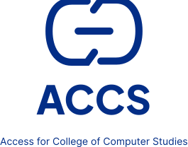

AnnouncementDemo
Make room for your next idea.
Explore the proposed peer study circle and share a topic you’d like to learn together.
Identity / proposed reference
A proposed identity for Access for College of Computer Studies. Professional, trustworthy, modern, accessible and structured.

logo-stacked · min 160pxColor and type / proposed reference
Three authoritative source colors anchor a proposed accessible extension. Use purpose, not hex, in product UI.
Foundations / proposed reference
An 8px rhythm, deliberate geometry, predictable responsive behavior and focus that is always visible.
0 tables · 4 chips · 6 controls · 8 cards · 12 overlays
| Viewport | Grid & margins | Navigation | Content behavior |
|---|---|---|---|
| 320–599px | 4 col · 16 gutter · 16 margin | 44px menu + compact header | Single column; tables become labeled records |
| 600–1023px | 8 col · 24 gutter · 24 margin | Collapsible navigation | Two columns only if each remains ≥280px |
| 1024–1439px | 12 col · 24 gutter · 32 margin | 240px sidebar | Main + supporting column; reading max 680px |
| 1440px+ | 12 col · 24 gutter · 48 margin | Persistent sidebar | Content max 1200px; do not stretch paragraphs |
focus = 3px color/focus · offset = 2px / surface gap
24px inset · 16px gap · 48px control
Components / proposed reference
Static reference of the ACCS 2026 components and state variant sets. These specimens are not production implementations.
Couldn’t validate this subject. Try again; your text is kept.
Policy scope is not confirmed.
General context only; omit personal details.
Use a native select where possible. Arrow keys move between options; the visible label persists.
Assigned cases only ≠ identity hidden. Do not style roles as severity.
Explore the proposed peer study circle and share a topic you’d like to learn together.
A sample community question. Share a useful explanation or ask a follow-up—everyone starts somewhere.
Join the conversationUse a radio-group selection model for a single appointment. State is written, not color-only. A selected time is not a confirmed booking.
Policy gate remains active. No sensitive submission.
Illustrative record only; not a submitted case.
DEMO-024 · dates and events are illustrative.
Severity is a proposed classification, not an emergency assessment.
Announce with a polite live region; do not steal focus. Keep essential feedback inline.
The unsent sample draft will be removed from this view. No report has been submitted. This action cannot be undone.
| Reference | Category | Status | Action |
|---|---|---|---|
| DEMO-024 | General concern | Draft · policy gate | View draft |
| DEMO-018 | Process question | Review pending · demo | View sample |
| DEMO-009 | General question | Resolved · demo | View sample |
Category: General concern
Permission: Student · own reports
View draftStart with a question or explore the community guidelines.
Loading… · announce once; no focus movement
Your work has not been submitted. Try again when you’re ready.